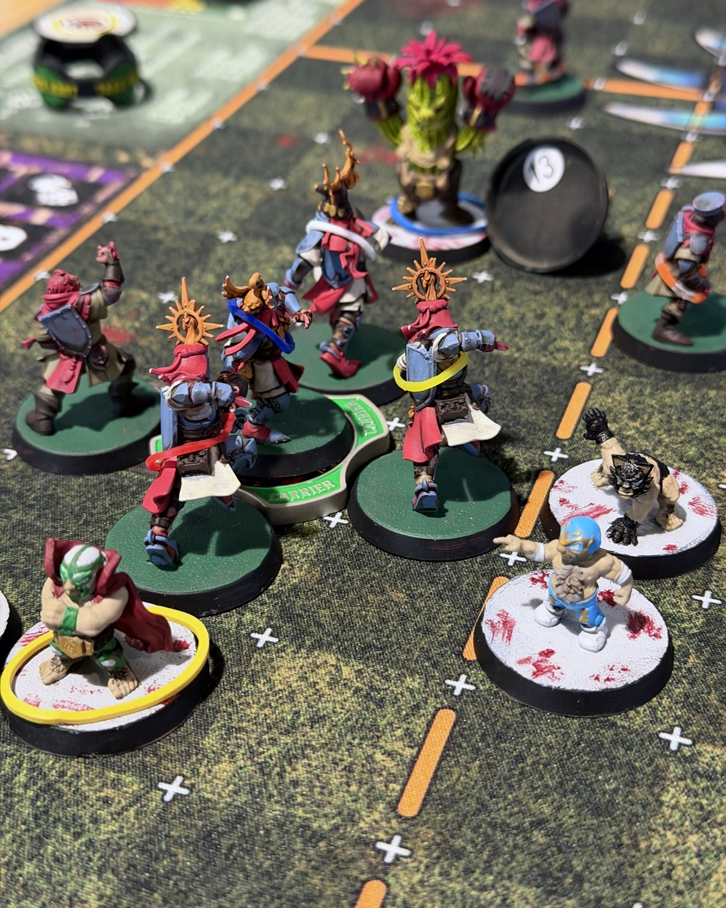
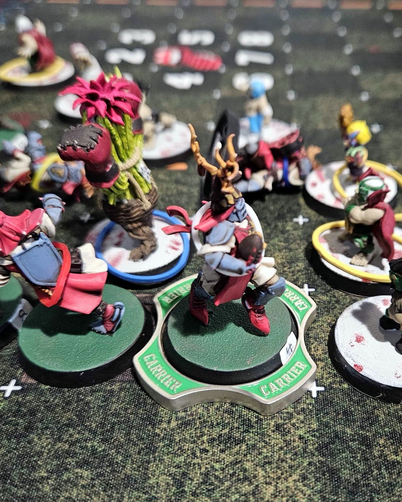
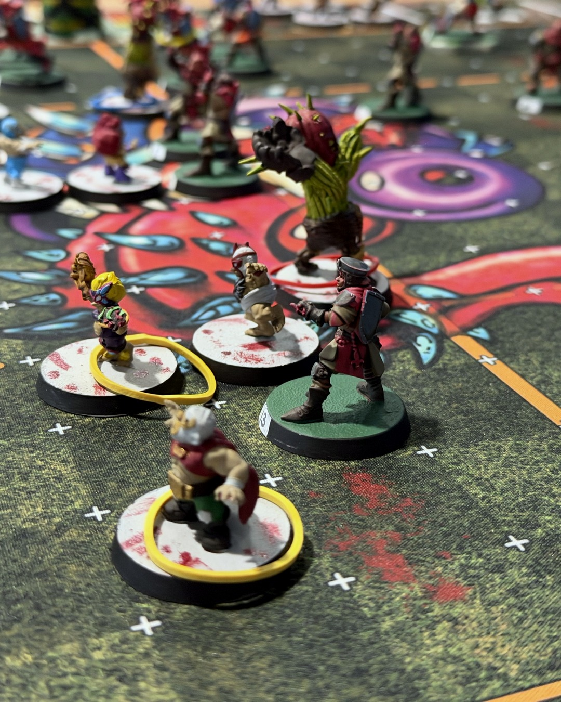
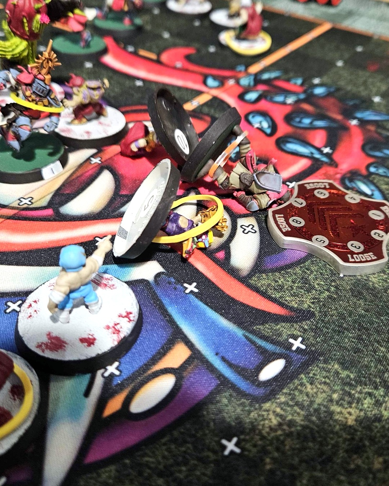
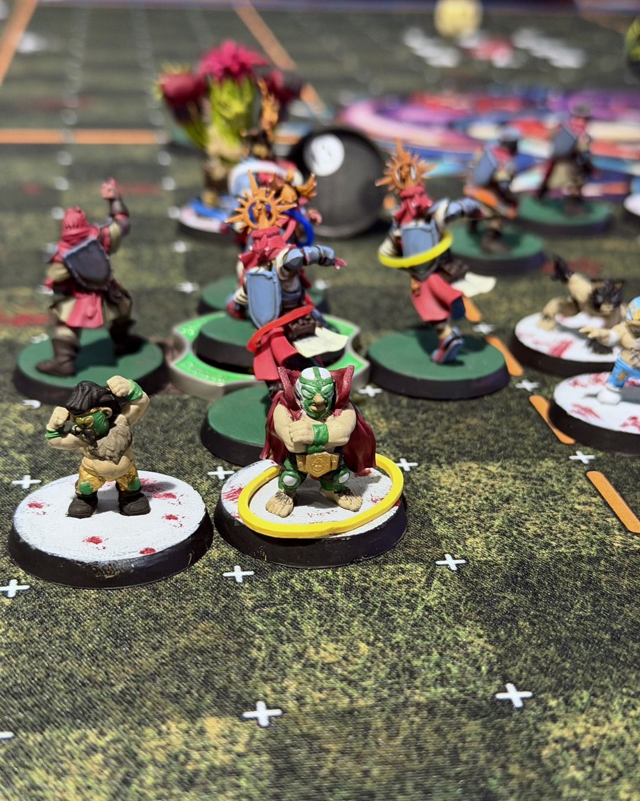

Grenadiers 0–1 Oak City Lucharitos
Rematch day. The Holy Hand Grenadiers beat these luchador halflings 2–0 back on Matchday 1, so this time they showed up with two Treemen, a keg of Blitzer's Best, and a Master Chef in the dugout stealing my rerolls. 🌵🤼
The knights got the ball moving early and tried to push it through the halfling line. Then Locustthorn happened. Their Treeman stunned my ball carrier, flattened Rogerin and a squire, and the halflings swarmed the loose ball.
This game came down to dodges. A knight scooped the ball up on a 6+... and failed the dodge right after. A squire dodged out and went for it twice to Wrestle their ball carrier down, easily my favorite moment of the day. Then my Grail Knight failed a dodge, knocked himself out, and burned a reroll on the way down.
The line held for most of the game, but Clothair Mugwort finally slipped through for the only touchdown. 1–0 Lucharitos, and the Grenadiers slip to 2–4. MVP for us went to Amynta. Big credit to Luke too, those masked, caped halflings are a seriously fun team to look at across the pitch.
Some days Nuffle hands you the 6 and takes the 2 right back.
@warhammerofficial
#bloodbowl #miniaturepainting #bretonnians #tabletopgaming #warhammercommunity